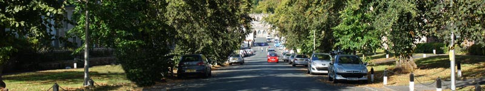
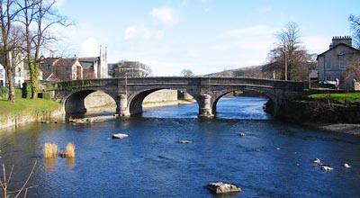
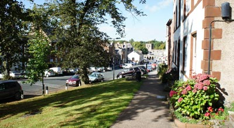
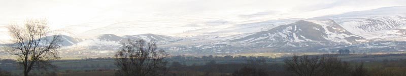
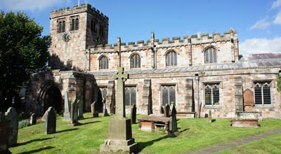
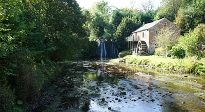

Appleby-in-Westmorland Tourist Information
 |
|
Appleby, in Cumbria's Eden Valley is a small market town with a strong sense of community, outdoor activities, surrounded by natural features and an interesting history. Sitting on the River Eden, Appleby stands in a remote quiet area of the Eden valley surrounded by limestone uplands, scenic valleys and lush farmland. Together with the unspoiled beauty of the countryside, visitors will find historic houses and buildings, castles, ancient sites, nature reserves and a series of traditional events such as hound trailing, fell racing, Cumberland & Westmorland Wrestling, rush bearing and country fairs demonstrating Cumbrian heritage. It is also a station stop on the historic engineering marvel of the Settle to Carlisle Railway whose steam train excursions along this incredible route are major crowd pullers. It belonged to Scotland until ownership was transferred to England in 1092 and for many years suffered cross border raids. Today, it is known by many for its annual 300 year old horse fair when each June, Gypsies and Travellers gather for a week of horse trading. This event has become world famous and is said to be the largest of its kind in Europe attracting thousands of visitors. The river washing of the animals in preparation for sale is a colourful event and draws large crowds. |
|
 |
 |
The main street of Boroughgate descends from the 17th C monument of High Cross past neat stone cottages to an 18th C replica at the lower end of the street. A Tourist Information Centre, once the Moot Hall, stands in the middle of the street a short way from the Gothic arch entrance to the medieval church of St. Lawrence. A 12th C castle, long associated with the philanthropic Clifford family is at the top of Boroughgate. Appleby is one of the Eden Valley's “Walkers are Welcome” towns and another perfect centre for both long and short distance walks, hikes, adventure challenges, cycle rides and mountain biking. |
|
 |
|
Events in Appleby-in-Westmorland History: |
|
1598 March 25th - The plague breaks out in Appleby and lasts until August 1st. Recorded deaths of 128 were considerably less than in other parts of the region. 1648 - Appleby Castle captured by Cromwells Roundheads. Large numbers of high ranking officers taken prisoner including 15 Colonels; 9 Lieutenant Colonels and 6 Majors together with 1200 horses, 1000 weapons and all the ammunition. 1675 - Geoffrey Braidley and Isabel Braidley convicted of stealing. They were sentenced to be placed in the stocks from 10am till 4pm over a number of days. 1793 - January 18th. William Graham of Appleby convicted of stealing a linen shirt costing around 10 D (approximately 4 New Pence). He was sentenced to be stripped to the waist and publicly whipped through the market on the next Saturday and imprisoned for 3 months. 1817 - The Low Cross Monument at the lower end of Boroughgate was rebuilt. 1818 - The High Cross Monument at the upper end of Boroughgate was rebuilt and the inscription of “ Retain your Loyalty-Preserve your Rights” was added. 1827 July 9th - John Copeland sentenced to jail for 9 months and publicly whipped on his bare back for an assault on Isabella Percival. According to Records this was the last instance of public whipping meted out as a punishment by the Quarter Sessions in Appleby. Historical Figures |
|
 |
 |
Appleby Tourist Information CentreSituated in the historic Moot Hall at the lower end of Boroughgate. It stocks free leaflets of local town guides, walking and cycling, bus and train services and local maps. It has level access to the information desk; a wheelchair accessible toilet and an exhibition room with monthly displays of local crafts.Open Monday to Saturday from 9.30am till 5pm. Open Sunday 10.30am till 2.30pm. Telephone 017683 51177. Email tic@applebytown.org.uk |
|
How to get there: By rail: Appleby is one of the stations on the scenic Settle to Carlisle railway. By road: Reach us on the A66 from the A1; Or leave the M6 at J38 and follow the A685 to Brough to join the A66, Or, leave the M6 at J40 and take the A66. |
|
Attractions |
Appleby Castle
The centuries old castle is open for tours at 11.30am and 2pm. Bookings must be arranged through the Tourist Information Centre.
For details and history of Appleby Castle and facilities including weddings, accommodation, conferences, functions and events see:
www.applebycastle.co.uk
Hazel Dene Garden Centre and Tearoom
Situated along the Settle to Carlisle railway, the garden centre offers an extensive selection of seasonal plants and garden furniture.
The tearoom offers freshly prepared food, cake and scones.
Situated between Penrith and Appleby.
Phone: +44 (0)1768 882520
www.hazeldenegardencentre.co.uk
Acorn Bank Garden
A National Trust garden with a walled herb garden of 250 species of culinary and medicinal herbs - the largest in the north of England.
Phone: (0)1768 361893
www.nationaltrust.org.uk
Appleby Horse Fair
Said to be the largest event of its kind in Europe and attracting upwards of 50,000 visitors. The Fair is an annual gathering of Gypsies and Travellers in the town of Appleby in Cumbria, which takes place on the first week in June, from Thursday to the following Wednesday. The best days for visitors who wish to see the fair are Friday, Saturday and Sunday.
Settle to Carlisle Railway
Appleby is a station stop on one of the most scenic railway journeys in the country. The special charter steam trains which operate on the line are of great interest to many people. Visitors will find a small shop operated by Friends of the Settle-Carlisle Line on the northbound platform selling souvenirs, books and D.V.D.'s
www.settle-carlisle.co.uk/travel-information/timetables-and-fares
Walks
The Friends of the Settle-Carlisle line Guided Walks have something for all ages and abilities.
Cross Fell, the highest section of the Pennine Chain and named as “England’s last Wilderness” is a rewarding climb and walk plus many other less demanding ones in the area. The area is perfect terrain for activity holidays.
Lacys Caves, Little Salkeld
These are 5 chambers on the side of the River Eden carved out by one Colonel Lacy who is also known for his attempt to blow up the stones of the Long Meg Stone Circle. The Colonel used the caves to entertain guests from an extensive wine cellar.
Long Meg and her Daughters (Little Salkeld)
One of the best surviving Stone Circles with 69 stones. Legend has it that Long Meg was witches who together with her 69 daughters were turned to stone for denying the Sabbath. The Circle is said to hold magic powers and so it is not possible to count the same numbers of stones twice, but if you do so then the magic spell will be broken. William Wordsworth wrote” next to Stonehenge it is beyond dispute the most notable relick(sic) that this or probably any other country contains”
See Wordsworths poem written in 1822, “Monument Commonly Called Long Meg”.
Little Meg
Situated a few hundred yards from Long Meg and is probably the smallest stone circle in Cumbria.
Dalemain House, near Penrith
Lovely House and Gardens.
Walking and Cycling Route
The Tourist Information Centre on Boroughgate in Appleby provides information leaflets with details of the many walking and cycling routes either starting from Appleby or passing through the town. For example, Appleby stands on the long distance walks of the Dales Highway: Pennine Way: Eden Way: Lady Annes Way: Westmorland Way and more, but, as with the cycling paths and trails there are many choices of “Do in a Day” options plus short distance family friendly strolls or rides.
St Lawrence Church
The 12th C church is an Appleby landmark at the lower end of Boroughgate. It was burned down by the Scots in 1174 and rebuilt in 1176. Once more it was destroyed by the Scots in 1388 and repaired early in the 15th C. It was Lady Anne Clifford of the philanthropic Clifford family who, in the 17th C was responsible for restoring much of that which had been damaged and added the north chapel and east end buttresses. Inside, is the oldest working organ (c. 1542) in Britain together with several other items of historical interest.
Appleby Leisure Centre
Standing next to the River Eden, the centre provides swimming lessons, pool parties and a fully equipped refurbished gym. Chapel Street. Appleby. Tel: 01768 351212.
Appleby Golf Club
England Golf Club describes Appleby golf course as a “hidden gem”. It's a well drained moorland 18 hole course with a wide variety of holes and several testing par 4's and outstanding views of the Pennines, Howgills and Lake District mountains.
www.applebygolfclub.co.uk
Rutter Force
A picturesque waterfall, ford and mill-wheel on Hoff Beck 3 miles from Appleby. It’s a particularly impressive sight after a period of rain with the best views from the wooden footbridge crossing the beck. It's well signposted from all main roads but can also be reached from Appleby on footpaths alongside the River Eden.
Fishing
Appleby Angling Association guest tickets are available for all 14 miles of the Associations waters from H. Pigney & Son, Ironmongers shop in the town. Telephone 017683 51240. Also, the Tourist Information Centre will be pleased to provide information about the “Go Wild Extensive Scheme” for anglers.
www.applebyangling.co.uk
Food and Drink |
Celebration Cakes by Jackie - With over 30 years professional experience, specialising in designing and making wedding and celebration cakes, I offer a personal service, starting with a consultation to discuss your requirements and the design of your cake, through to the creation of a quality product, delivery and set up within the Lake District, Eden Valley and Scottish Borders.
Phone No: 01768 354096
Email: enquiries@celebrationcakesbyjackie.co.uk
Web: www.celebrationcakesbyjackie.co.uk
High Cup Wines
High Cup Wines are based at Townhead Farm in an Area of Outstanding Natural Beauty 4 miles by road from Appleby, but less if walked along quiet footpaths. This is Cumbrias only commercial vineyard and winery and provides a broad selection of country wines from fruit grown on the farm and locally. Visit their website for information of wines, prices, group visits, news, events and contact details.
www.highcupwines.co.uk
Transportation |
Morris Minor Travel
High quality taxi and minibus services. We operate modern, licensed and fully insured vehicles with prompt and reliable service.
Our range of vehicles comprise a 4 seater licensed Hackney taxi, together with 8, 11 and 14 seat minibuses.
Phone: 017683 52772 or 07710 609307
SMS: 07710 609307
www.morrisminortravel.co.uk